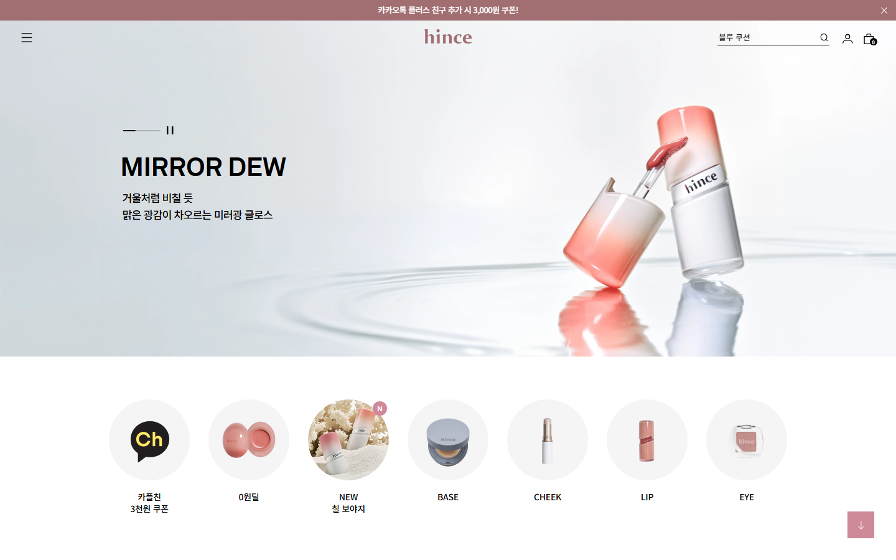
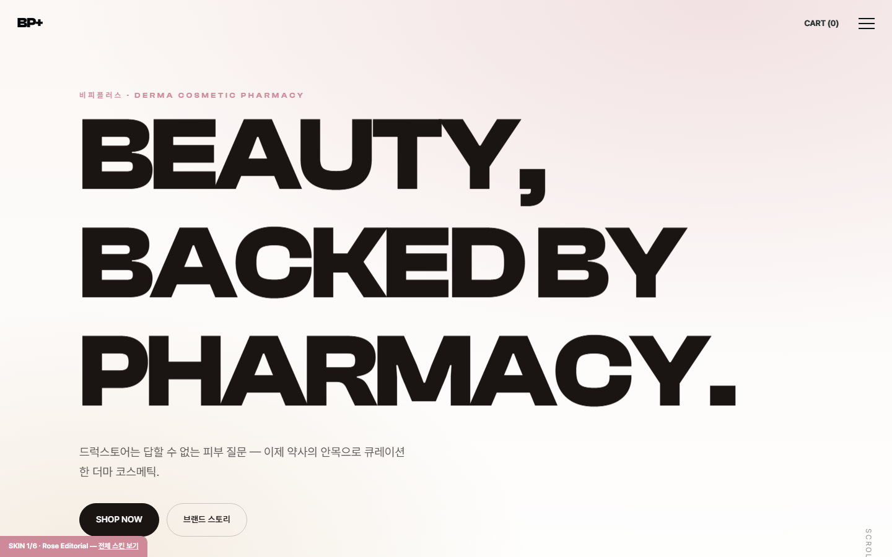

1차(bps) vs hince 실제 배치 차이 진단 · 2차(bps2) 재구성 · 다중 에이전트 충실도 검증
Diagnosis
1. 1차(bps)가 hince와 안 닮았던 이유
1차는 hince가 아니라 bp-plus.co.kr의 Manus 랜딩을 hince로 착각했습니다. 그래서 "BEAUTY BACKED BY PHARMACY" 키네틱 타이포가 전면을 덮는 원페이지 랜딩이 됐고, hince의 정체성인 샵 중심 구성(제품 배너·상품 그리드·카테고리)이 전무했습니다.
요소
1차 bps (틀림)
hince 실제
히어로
거대 키네틱 타이포가 화면 점령
Swiper 제품 배너(제품컷+미니 카피+카운터+닷)
헤더
햄버거 우측·blend
햄버거 좌·중앙 로고·우 라인 아이콘 + 공지바
샵
없음(스탯/핀 위주)
원형 카테고리 → BEST SELLER 랭킹 그리드
전체
스탯·DATA INTELLIGENCE 핀·마퀴
제품·에디토리얼·시네마틱 중심 세로 스크롤
hince Spec
2. hince 실제 홈 구성(추출)
공지바→미니멀 헤더(햄버거·중앙로고·라인아이콘)→Swiper 제품 배너→원형 카테고리→BEST SELLER 4열 랭킹→비대칭 NEW ARRIVALS→브랜드 스토리→시네마틱 풀블리드→로즈 푸터 + 초대형 워드마크
Rebuild
3. 2차(bps2): hince 구성 × bps 스타일
hince의 위 골격을 그대로 따르되, bps의 6테마·알파 색 사다리·프리미엄 폰트·GSAP(핀·패럴랙스·스태거)·풀스크린 오버레이 GNB·Swiper를 입혔습니다.

hince 레퍼런스 (홈 상단)

1차 bps (키네틱 랜딩)
2차 bps2 (hince식 제품 배너) (없음)
2차 bps2 (hince식 제품 배너)
Audit
4. 다중 에이전트 충실도 검증
6개 섹션 렌즈(헤더·히어로·그리드·에디토리얼·푸터·모션)가 hince 레퍼런스와 bps2를 픽셀 단위로 대조 채점했습니다.
렌즈
v2.0
v2.1
변화
헤더 & 내비게이션
62
86
▲ +24
히어로 배너
68
72
▲ +4
카테고리 원형 + BEST SELLER 그리드
72
82
▲ +10
NEW ARRIVALS 비대칭 + 콘텐츠
68
62
▼ -6
푸터 & 전체 리듬
71
68
▼ -3
모션 & 4기능
71
82
▲ +11
종합
69
76
▲ +7
v2.0 종합 69/100 — "조건부 합격 — '구조는 hince, 표면은 미완성'". bps2(BP+ 통합몰)는 hince 홈의 구조 골격을 매우 충실히 복제했다. 좌(햄버거)·중앙(로고)·우(유틸리티) 3분할 헤더 + 상단 공지바 + 풀스크린 오버레이 GNB, 풀폭 Swiper 히어로 + 슬라이드 카운터 + 좌측 정렬 닷, 원형 카테고리 1행, 4열 BEST SELLER 랭킹 그리드, 좌 에디토리얼 + 우 2x2 비대칭 NEW ARRIVALS, 로즈 단색 배경 + 하단 초대형 워드마크 푸터까지 섹션 시퀀스와 카드 해부도(썸네일·랭킹·이름·할인%·가격/취소선·별점·색상칩 6요소)가 hince와 거의 1:1로 맞는다. 모션 엔진(알파 색 사다리, GSAP 핀/패럴랙스/스태거 리빌, 타임라인 GNB, Swiper)도 코드 레벨에서 모두 실제 구현되어 골격·기능 점수는 높다. 그러나 'hince스러움'을 결정짓는 표면이 비어 있다: 히어로 보틀·BEST/NEW 썸네일·원형 카테고리·에디토리얼 인물 컷·시네마틱 풀블리드가 전부 CSS 그라데이션/도형/영문 이니셜 플레이스홀더라 라이브 캡처에서 빈 회색 박스·백지로 보인다. 동시에 hince에 없는 다크 캐러셀·핀 스크롤재킹·다크 풀블리드 2연타·과도한 페이지 길이(5490→8500px)가 hince의 밝고 가볍고 컴팩트한 샵-우선 리듬과 어긋난다. 즉 구조는 hince, 표면과 톤 절제는 미완성. 6개 렌즈 평균 약 69점.
Fixes
5. v2.0 → v2.1 개선 (검증 피드백 반영)
지적된 갭
심각도
v2.1 적용
전 섹션 실사 이미지 부재 (플레이스홀더 도형/이니셜)
high
4종 실사형 CSS 제품 목업(dropper·bottle·tube·jar·compact: 캡·라벨·광택 하이라이트·바닥 반사)으로 교체. 원형 카테고리에 미니 제품 목업, 에디토리얼은 인물 톤(머리/피부) 다층 그라디언트+그레인. 라이선스 실사 스왑 지점 주석.
다크 블록 과잉 + 페이지 과길이(8500px) + 핀 스크롤재킹
high
핀 브랜드 스토리를 라이트(cream) 톤으로 전환, 시네마틱을 밝은 하늘→로즈 그라디언트로 변경(푸터 로즈 자연 연결), 히어로 다크 슬라이드 제거(전 슬라이드 라이트), .sec 패딩 90→66px·히어로 78→64vh로 압축.
히어로 above-fold 캡처 백지
high
히어로 첫 슬라이드를 라이트 제품 배너로 고정, 제품 목업은 CSS라 JS 없이 즉시 렌더(no-JS 폴백). 캡처는 4s 대기 후 촬영.
헤더 텍스트 라벨(MY/CART)·이모지 검색·피부고민 텍스트·두꺼운 로고·공지바 X 부재
medium
우측을 stroke SVG 라인 아이콘(검색·사람·장바구니+카운트 뱃지)으로 교체, 검색을 언더라인형+실제 상품명 placeholder("블루 쿠션")로, 좌측 햄버거 단독(피부고민 텍스트 제거), 로고 두께 800→600, 공지바 우측 X 닫기 추가.
랭크 배지 검정 정사각·상태 뱃지 부재·가격 타이포 헐거움
medium
랭크 배지를 시그니처 핑크 원형으로, 썸네일 우상단 NEW/BEST 상태 뱃지 슬롯 추가, 가격 타이포 15→14px로 압축.
v2.1 재검증 종합 76/100 (v2.0 대비 +7). 합격에 근접하나 마감 보강 필요 — 종합 76/100. bps2는 hince 홈의 '구조'와 '동작'을 거의 만점에 가깝게 복제했다(헤더 86, 모션&4기능 82, 카테고리+BEST 82). 정보구조·섹션 순서·카드 메타·모션 엔진(GSAP 핀/패럴랙스/스태거+오버레이 GNB+Swiper, reduced-motion 가드)은 출시 가능 수준이며 코드 충실도만 보면 hince급이다. 그러나 닮음의 상한을 누르는 단일 결정 요인은 명확하다: hince를 hince답게 만드는 '글로시 실사 제품컷+거울 반사'와 '모델 에디토리얼 인물컷'을 전부 CSS 목업(.pm)·추상 실루엣으로 대체해, 스크린샷에서 즉시 와이어프레임/플레이스홀더로 읽힌다는 점이다(6개 렌즈 중 5개에서 high 갭 반복, NEW ARRIVALS 62·푸터 68이 이 때문에 가장 낮다). 권고: (1) 히어로 3슬라이드·NEW 에디토리얼·시네마틱 3곳을 운영 교체 가능한 실사 이미지 슬롯으로 우선 전환, (2) 워드마크를 풀 소문자로 키워 푸터 바닥 블리드 + 디스플레이 세리프 분리 적용, (3) 히어로/NEW 비대칭 무게중심을 제품·에디토리얼 우위로 복원하고 히어로 높이·카피 잘림 교정, (4) 홈 섹션 수를 줄여 .sec 패딩을 키우고 리뷰를 시네마틱 위로 옮겨 시네마틱→로즈 푸터 색 클라이맥스를 연속화. 이 high/medium 갭들만 닫으면 90점대 진입이 충분히 가능한, '구조는 완성·질감만 미완'인 강한 베이스다.
Remaining
6. v2.1 잔여 갭 (운영 시 보강)
[high] 전 섹션 공통 1순위 결함 — 실사 비주얼 부재. 히어로 제품, 원형 카테고리, BEST/NEW 썸네일, NEW ARRIVALS 에디토리얼, 시네마틱 풀블리드가 모두 CSS 그라데이션 목업(.pm)과 추상 인물 실루엣으로 대체돼, _full/_raw 샷에서 형체 없는 분홍 얼룩/추상 블록으로 렌더된다. hince의 정체성인 '글로시 실사 제품컷 + 거울 반사 바닥'과 '자연광 모델 에디토리얼'이 통째로 증발해, 6개 렌즈 중 5개에서 high 갭으로 동일하게 반복된다. 닮음 점수 상한을 가장 크게 누르는 단일 요인. → 운영 교체 가능한 <img>/object-fit:cover 슬롯으로 우선순위를 정해 실사화한다: (1) 히어로 3슬라이드 제품 PNG(투명배경)+바닥 reflection 레이어, (2) NEW ARRIVALS 에디토리얼 모델 라이프스타일 컷, (3) 시네마틱 풀블리드 이미지. 이미지 확보 전까지는 목업이라도 .reflect를 floor-reflection(바닥 그라데이션+blur+mask)으로 확장하고 specular 하이라이트·미세 노이즈를 더해 '오브제'로 보이게, 원형/그리드 .pm은 카테고리·카드별로 색·형태(pm-tube/jar/compact)를 확실히 다양화해 반복감을 없앤다.
[high] 워드마크/디스플레이 타이포가 hince의 무드를 못 따라감. 로고 'BP+'(Clash Display 600/25px)와 푸터 초대형 워드마크 'BP+'(weight 800 대문자, 3글자+'+'글리프)가 hince의 절제된 소문자 세리프 워드마크와 결이 달라 더 무겁고 테크/스포티하게 읽힌다. 특히 푸터 워드마크는 3글자라 25vw로도 좌우를 가득 못 채우고 가운데 뭉쳐, hince 푸터의 압도적 풀폭 가로 점유가 안 나온다. → 워드마크를 풀 워드마크/소문자 표기(예: 'bpplus' 또는 'beauty pharmacy')로 글자수를 늘리고 width:100%/white-space:nowrap + cqw 또는 30~34vw로 키워 좌우 끝까지 닿게 한다('+'는 본체와 분리한 작은 accent로). border-top 제거 + padding-bottom 0/음수 마진으로 바닥 베이스라인 블리드 연출. 로고 weight를 600→400~500, letter-spacing 완화. 히어로 h2·sec-title·footer .mark에 한해 디스플레이 세리프(Fraunces/Canela/Editorial New 또는 운영 시 명조)를 --font-display와 분리 적용해 에디토리얼 우아함을 부여한다.
[high] 히어로 비대칭 위계 역전 + 카피 잘림. hince는 '좌상단 작은 카피 / 중앙우측 대형 제품'으로 제품이 시각 주인공인데, bps2는 hero-copy max-width 50% / hero-vis width 33%로 카피 비중이 더 커 '제품이 주인공'이라는 핵심 위계가 약화됐다. 동시에 64vh 높이가 답답하고 슬라이드2 h2('데이터로 고른 루틴')가 우측 비주얼과 충돌해 화면 밖으로 잘린다. NEW ARRIVALS도 에디토리얼 .82fr/제품 1.18fr로 무게중심이 제품 쪽으로 역전돼 '에디토리얼이 주인공'이 흐려진다. → 히어로: height를 clamp(560px,72vh,760px)로 키우고 그리드를 카피 44%/비주얼 40%/gap 16%로 재배분, hero-vis를 width 40~46%·우측 정렬 강화, h2 clamp 상한 52px·max-width를 ch 단위로 바꿔 잘림 방지. NEW ARRIVALS: 그리드를 에디토리얼 우위(1.15fr 0.85fr)로 재배분하고 .editorial min-height를 제품 2x2 높이에 맞춰 좌측 대형 단일컷의 존재감을 키운다.
[medium] 전체 리듬 과밀 + 클라이맥스 색 전환 단절. hince는 '적은 섹션·넉넉한 공기'의 정적 리듬인데, bps2는 그 사이에 피부고민 탭·100vh 브랜드 핀·약사의 노트·REAL REVIEW까지 끼워 넣어 빽빽하다. 특히 색을 인계하려는 시네마틱(블루→로즈)과 로즈 푸터 사이에 흰 배경 REAL REVIEW 4열 그리드가 끼어 hince의 '시네마틱→곧장 로즈 푸터' 마무리 클라이맥스와 색 흐름을 끊는다. → 홈에서는 브랜드 핀(100vh)·약사의 노트·리뷰 중 1~2개를 하위 페이지로 빼거나 접어 밀도를 낮추고, 남기는 .sec padding을 66px→96~120px로 키워 hince 수준의 수직 공기를 확보한다. REAL REVIEW를 시네마틱 위(프로모/노트 근처)로 이동시켜 시네마틱→푸터를 연속 배치, 블루→로즈→로즈푸터 색 흐름을 끊김 없이 잇는다.
[medium] 머천다이징·인디케이터·카테고리 의미 디테일 부족. (1) 공지바·장바구니 배지의 핑크 채도가 높아 hince의 '눌린 공지바 + 화이트 미니멀' 대비가 약하다. (2) BEST/NEW 그리드에 hince 같은 SOLD OUT 오버레이·다중(4~6개) 색상칩·쿠폰가 보조라벨이 없어 정보 밀도가 낮다. (3) 원형 카테고리 라벨이 제품군(BASE/CHEEK/LIP)이 아닌 피부고민(Trouble/Aging) 중심이라 '원형=쇼핑 진입 카테고리'라는 hince 의미가 어긋난다. (4) 히어로 navigation 화살표 DOM(.hero-prev/next)이 없어 Swiper navigation 설정이 무효다. → .anno 배경을 --ink 딥 뉴트럴로 교체(글자 흰색 유지)하고 장바구니 배지는 count=0 시 숨김/무채·13px로 절제한다. 일부 카드에 SOLD OUT 오버레이·4~5색칩·세일 보조라벨을 추가해 카탈로그 밀도를 맞추고, 1위 배지만 다크/골드로 차등화한다. 원형 행은 제품군 카테고리로 재배치하고 피부고민은 하단 탭으로 분리. 미니멀 선형 화살표 .hero-prev/.hero-next DOM을 추가하고 카운터(01/03)와 통합 배치한다(미사용 시 dead config 정리).
본질적 한계: 6개 렌즈가 만장일치로 지목한 1순위는 실사 제품/인물 사진입니다. 자기완결 HTML 데모라 라이선스 실사를 넣지 못해 CSS 목업(광택·반사·캡·라벨)으로 최대치를 구현했고, 각 파일에 실사 이미지 스왑 슬롯/주석을 두었습니다. 구조·정보·모션은 hince급(82~86)이며, 실사 사진만 교체하면 90점대 진입이 가능합니다.
Strengths
6. 충실히 재현된 점
구조 골격 1:1 복제: 좌 햄버거·중앙 로고·우 유틸리티 3분할 헤더(grid 1fr auto 1fr) + 상단 공지바 + 풀스크린 오버레이 GNB로 hince의 미니멀 헤더 문법을 정확히 재현.
섹션 시퀀스 정합: 히어로 → 원형 카테고리 → BEST SELLER 4열 랭킹 → NEW ARRIVALS 비대칭(좌 1 + 우 2x2) → 프로모 2열 → 풀블리드 시네마틱 → 거대 워드마크 푸터까지 hince 홈 흐름과 동형.
상품 카드 해부도 완비: 1:1 썸네일·랭킹 배지·상품명·할인%·현재가·정가 취소선·별점/리뷰수·색상칩 6요소를 hince 카드와 거의 일대일로 구현, 할인%도 시그니처 핑크 톤.
키네틱 타이포 절제(핵심 요구 충족): .kin이 좌측 50% 카피 컬럼 안에서만 yPercent 115→0 스태거로 등장해 우측 제품 영역을 침범하지 않고, prefers-reduced-motion 가드까지 존재.
푸터 단독 충실도 높음(~80점대): 로즈 단색 배경 + 멀티컬럼 정보 위계 + 하단 좌측 초대형 워드마크(clamp 80~360px) + 상단 구분선/카피 리듬이 hince 'hince' 워드마크 푸터와 거의 동일.
모션·기능 엔진 실제 구현: --ink/--white/--signature/--accent 알파 색 사다리, GSAP 핀+scrub+progress, 패럴랙스, 스태거 리빌(once), 타임라인 GNB, Swiper(loop·speed 900·autoplay·카운터) 모두 reduce-motion·fallback 가드 포함해 완성도 높게 구동.
유료급 웹폰트 스왑 구조화: Clash Display + Pretendard preconnect 로드 + 운영 스왑 지점 주석으로 4기능 의도를 코드에 명시.
Note
남은 한계
제품/인물 비주얼은 자기완결 데모를 위해 CSS 목업으로 구현했습니다(광택·반사·캡·라벨 + 인물 톤 그라디언트). 실제 hince급 완성도는 실사 제품/인물 사진 교체가 필요하며, 각 파일에 라이선스 이미지/폰트 스왑 지점을 주석으로 표기했습니다. 폰트·GSAP·Swiper는 CDN 로드(인터넷 필요).
검증: 7개 에이전트 워크플로우(섹션 렌즈 6 + 종합 1) · hince 실측 vs bps2 대조